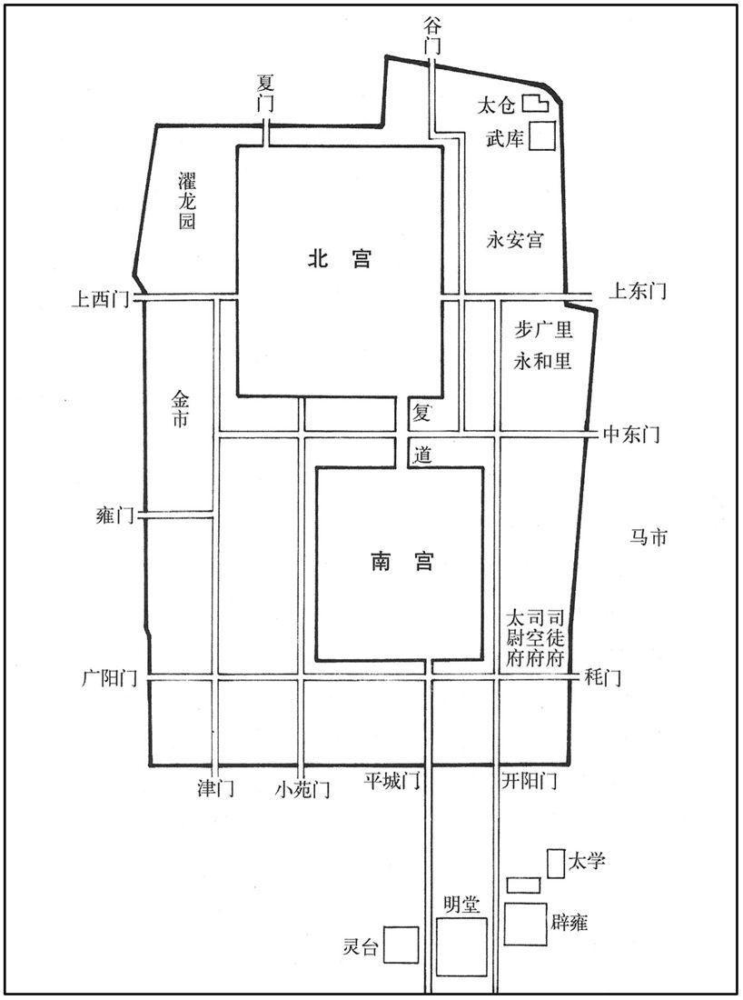

公元65年资治通鉴：本年记事、原文与白话对照
按原书编年位置阅读；追叙和史论不等于本年发生的事件。白话采用所据译本，缺译不以生成译文补齐。
卷45 · 本年记事
公元65年 · 汉显宗孝明皇帝永平八年
八年〔（乙丑、六五）〕
本年事件索引（现代整理）

本年形势与背景参考图
春，正月，己卯，司徒范迁薨。
春季，正月己卯（初二），司徒范迁去世。
三月，辛卯，以太尉虞延为司徒，卫尉赵熹行太尉事。
三月辛卯（疑误），将太尉虞延任命为司徒，命卫尉赵熹代理太尉职务。
越骑司马郑众使北匈奴，〔越骑校尉司马一人，秩千石。〕单于欲令众拜，众不为屈。单于围守，闭之不与水火；众拔刀自誓，〔自誓以死，不为单于屈也。〕单于恐而止，乃更发使，随众还京师。
越骑司马郑众出使北匈奴，北匈奴单于想要让郑众叩拜，郑众没有屈从。单于派人包围看守，关闭起来，断绝了水火供应。郑众拔出佩刀发誓。单于恐惧，这才罢休，于是重新派遣使者，随郑众回到都城洛阳。
初，大司农耿国言：「宜置度辽将军屯五原，以防南匈奴逃亡，」朝廷不从。南匈奴须卜骨都侯等知汉与北虏交使，内怀嫌怨，欲畔，〔匈奴异姓大臣，左、右骨都侯也。又异姓有呼衍氏、须卜氏、立林氏、兰氏，皆匈奴国中名族，常与单于婚姻。〕密使人诣北虏，令遣兵迎之。郑众出塞，疑有异；伺候，果得须卜使人。〔伺，相吏翻。使，疏吏翻。〕乃上言：「宜更置大将，以防二虏交通。」由是始置度辽营，以中郎将吴棠行度辽将军事，将黎阳虎牙营士屯五原曼柏。〔汉官仪曰：光武以幽、冀兵克定天下，故于黎阳立营，以谒者监领，兵骑千石。贤曰：昭帝拜范明友为度辽将军，至此复置焉。曼柏县，在今胜州银城县界。〕
先前，大司农耿国曾上书说：“应当设置度辽将军屯兵五原郡，以防备南匈奴逃亡。”朝廷没有采纳他的建议。南匈奴须卜骨都侯等人听到汉朝同北匈奴互通使者的消息，心怀怨恨，打算反叛，于是秘密派人前往北匈奴，要北匈奴派兵接应。郑众出塞时，疑心情况有异，便伺察等侯，果然抓到了须卜的信使。郑众便上书说：“应当重新在边境设置大将，以防备南北匈奴互相联络。”从此，汉朝便开始设置度辽营，命中郎将吴棠代理度辽将军事务，率领黎阳虎牙营的兵士，屯驻在五原郡曼柏县。
冬，十月，北宫成。
冬季，十月，北宫落成。
丙子，募死罪系囚诣度辽营；有罪亡命者，令赎罪各有差。楚王英奉黄缣、白纨诣国相曰：〔汉成帝王国省内史，令相治民，职如太守，秩二千石。纨，今之绢也。师古曰：纨，素也；缣，并丝绢也。相，息亮翻。〕「托在藩辅，过恶累积，欢喜大恩，奉送缣帛，以赎愆罪。」国相以闻，诏报曰：「楚王诵黄、老之微言，尚浮屠之仁慈，洁齐三月，〔齐，读曰斋。〕与神为誓，何嫌何疑，当有悔吝！其还赎，以助伊蒲塞、桑门之盛馔。」〔塞，悉则翻。馔，雏恋翻，又雏皖翻。〕
十月丙子（初四），募集犯有死罪的囚徒前往度辽营。命令逃亡的罪犯赎罪，依据不同的情况，各分等级。楚王刘英带着黄色细绢和素色薄绸去见国相，说道：“我身居藩国，罪过积累，我非常高兴，蒙受大恩。献上细绢薄绸，以赎我罪。”国相将此事上报朝廷，明帝下诏答复说：“楚王口念黄帝、老子的精微之言，崇尚佛家的仁爱慈悲，曾戒斋三个月，对佛立誓。有什么猜嫌和疑问，应当悔恨？把那些赎罪之物退还，赞助他以美食款待佛门弟子。”
初，帝闻西域有神，其名曰佛，因遣使之天竺求其道，得其书及沙门以来。其书大抵以虚无为宗，贵慈悲不杀；以为人死，精神不灭，随复受形；生时所行善恶，皆有报应，故所贵修炼精神，以至为佛。善为宏阔胜大之言，以劝诱愚俗。精于其道者，号曰沙门。于是中国始传其术，图其形像，而王公贵人，独楚王英最先好之。〔袁宏汉纪：浮屠，佛也。西域天竺国有佛道焉。佛者，汉言觉也，将以觉悟群生也。其教以修善慈心为主，不杀生，专务清静。其精者为沙门。沙门，汉言息也。盖息意去欲以归于无为。长丈六尺，黄金色。初，明帝梦见金人长大，以问群臣。或曰：「西方有神，其名曰佛，陛下所梦，得无是乎﹖」于是遣使天竺，问其道术而图其形像焉。贤曰：伊蒲塞，即优婆塞也，中国翻为近住，言受戒行堪近僧住也。桑门，即沙门，梵云沙门那，或曰桑门，唐言勤息，秦译云勤行，又云善觉。魏收曰：汉武帝遣霍去病讨匈奴，获休屠王金人，以为大神，列于甘宫，不祭祀，但烧香礼拜而已。此则佛道流通之渐也。张骞使大夏，传其旁有身毒国，一名天竺，始闻有浮屠之教。哀帝元寿元年，博士弟子秦景宪受大月氏王使伊存口授浮屠经，中国闻之，未信了也。后明帝夜梦金人，顶有白光，飞行殿庭，乃访群臣，傅毅始以佛对。帝遣郎中蔡愔等使天竺，写浮屠遗范，仍与沙门摄摩腾、竺法兰东还洛阳，中国有沙门跪拜之法自此始。愔之还，以白马负经而至，汉因立白马寺于洛城雍关西。好，呼到翻。〕
起初，明帝听说西域有一神祗，名字叫作“佛”，于是派使者前往天竺国寻求佛教道义。使者在西域找到了佛经，并带着沙门回到中原。佛经大抵以一切虚无为本，崇尚慈悲不杀生。认为人死之后，精神不灭，可以再次投胎转世，而人生前所作的善事恶事，全都会有报应。因此，提倡修炼精神，直至成“佛”。佛家擅于使用恢弘博大的言词，以劝化诱导愚昧的凡夫俗子。精通佛家道义的人，称为“沙门”。于是佛教便开始在中原传播，图画佛门形像。在天子、诸王和显贵当中，唯独楚王刘英最先喜好佛教。
壬寅晦，日有食之，既。〔既，尽也。〕诏群司勉修职事，极言无讳。于是在位者皆上封事，各言得失；帝览章，深自引咎，以所上班示百官。〔上，时掌翻。〕诏曰：「群僚所言，皆朕之过。民冤不能理，吏黠不能禁；〔黠，下八翻。〕而轻用民力，缮修宫宇，出入无节，喜怒过差。永览前戒，竦然兢惧；徒恐薄德，久而致怠耳！」〔人主能切己省察，然后能有是言。〕
十月壬寅晦（三十日），出现日全食。明帝下诏，勉励百官各尽职守，用最直率的态度批评朝政而无所忌讳。于是官员们全都呈上密封的奏章，各自议论朝政的得失。明帝观看奏章，深自责备，便将这些奏章向百官公布，并下诏说：“群臣指摘之事，都是朕的过错。人民冤屈不能申雪，贪官污吏不能查禁，却轻率地使用民力，营建宫室，开支与征税无节制，而且喜怒无常。回顾古人的鉴戒，十分恐惧，只怕朕品德寡薄，日久生怠！”
北匈奴虽遣使入贡，而寇钞不息，〔钞，楚交翻。〕边城书闭。帝议遣使报其使者，郑众上疏谏曰：「臣闻北单于所以要致汉使者，〔要，一遥翻。〕欲以离南单于之众，坚三十六国之心也；〔贤曰：武帝开通西域，本三十六国，余谓坚其心者，欲使之专附匈奴。〕又当扬汉和亲，夸示邻敌，令西域欲归化者局足狐疑，怀土之人绝望中国耳。汉使既到，便偃蹇自信；〔信，音申。〕若复遣之，虏必自谓得谋，〔得谋，犹言得计。复，扶又翻；下同。〕其群臣驳议者不敢复言。〔贤曰：驳议，谓劝单于归汉。驳，北角翻。〕如是，南庭动摇，乌桓有离心矣。〔南单于庭在西河美稷。动摇，谓欲出塞北去。乌桓本附匈奴，汉置校尉领护，使不得与匈奴交通。离心，谓其心不亲附汉而贰于匈奴也。〕南单于久居汉地，具知形势，万分离析，旋为边害。今幸有度辽之众扬威北垂，虽勿报答，不敢为患。」帝不从。复遣众往，众因上言：「臣前奉使，不为匈奴拜，〔为，于伪翻；下同。〕单于恚恨，遣兵围臣；〔恚，于避翻。〕今复衔命，必见陵折，臣诚不忍持大汉节对毡裘独拜。〔前书匈奴传曰：自君王以下，皆食畜肉，衣其皮革，被旃裘。旃，与毡同。〕如令匈奴遂能服臣，将有损大汉之强。」帝不听。众不得已，既行，在路连上书固争之上；诏切责众，追还，系廷尉，会赦，归家。其后帝见匈奴来者，闻众与单于争礼之状，乃复召众为军司马。〔汉制：大将军营五部，部校尉一人，比二千石；军司马一人，比千石；其不置校尉部，但军司马一人。帝召众为军司马，使与马赓击车师。〕
北匈奴虽然派使者入朝进贡，但侵掠不断，致使边疆城镇白日关闭城门。明帝同群臣商议，打算派遣使者回报匈奴来使。郑众上书劝谏道：“我听说，北匈奴单于所以要挟汉朝派出使者，目的是想离散南匈奴单于的部众，坚定西域三十六国对北匈奴的效忠之心。他还将吹嘘已同汉朝和解通好，向邻近敌国夸耀，使西域那些打算归附汉朝的国家畏缩猜疑，使流亡在外怀念故土的人对汉朝绝望。汉朝使者到过北匈奴以后，单于便已十分傲慢自负，如果再派使者，他一定会自以为得计，而北匈奴群臣中反对与汉朝为敌的人也不敢再说话了。这样，南匈奴王庭便会发生动摇，乌桓也将与我们离心离德。南匈奴单于长期居住在中国内地，对我方的情况与地形一一知晓，万一同汉朝分裂，即刻便成为边境的祸患。如今，幸而有度辽营的大军在北疆扬威镇守，即便我们不派使者回报北匈奴，他们也不敢作乱。”明帝不接受郑众的劝谏，再次派他做使者前往北匈奴。于是郑众上书说：“我前次奉命出使北匈奴时，因不肯行叩拜之礼，单于十分愤恨，曾派兵把我围困起来。如今我再次领命前往，定会遭到凌辱，我实在不愿自己手持大汉的符节，对着毛毡皮衣独拜。而如果我迫于形势向匈奴屈服，则将有损于汉朝的国威。”明帝不听郑众的劝谏，郑众不得已而动身。出发后，他在路上接连上书力争，坚持自己的主张。于是明帝下诏严厉责备郑众，将他追回，囚禁于廷尉监狱。适逢赦免，他便回到家乡。后来，明帝会见北匈奴的来客，听到郑众与单于因礼仪相争的情况，便再次征召郑众，任命为军司马。
译本中未与胡注本可靠对应的内容
以下另列供核对版本差异，不并入胡注本正文。
译本所附古文
[4]秋，郡国十四大水。
译本白话
秋季，十四个郡和封国发生水灾。